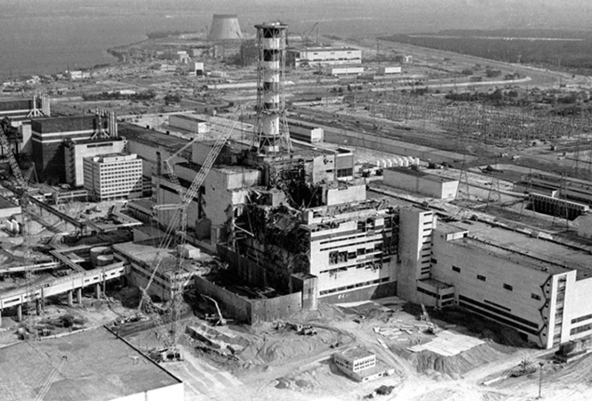
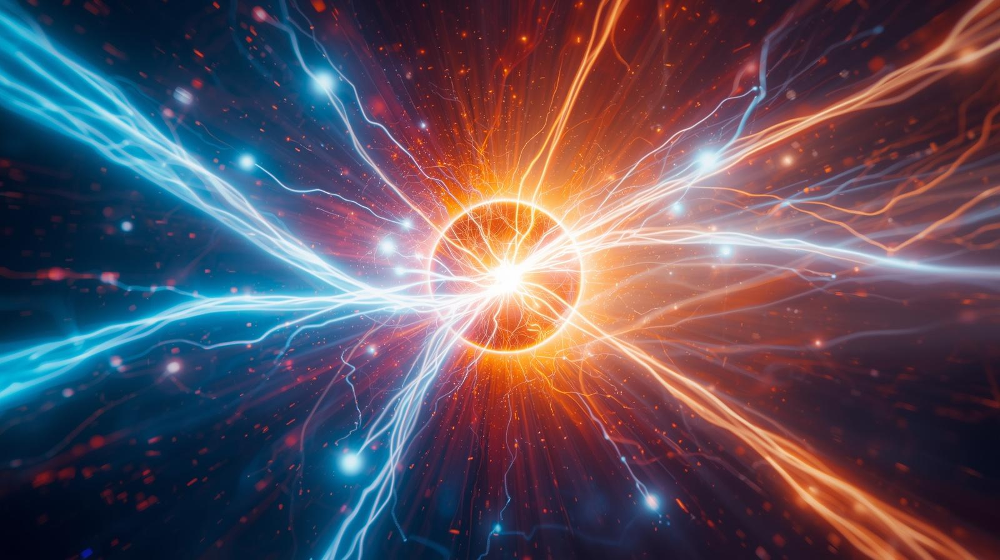

Ezzel együtt nem tekinthetünk el a technológia veszélyétől, amit a csernobili és a fukushimai katasztrófák során tapasztalt meg az emberiség.
Az atomenergia hátrányai között fontos még megemlíteni, hogy főképp egy nem megújuló energiaforrásra, az uránra támaszkodik, amely korlátozott mennyiségben fordul elő bolygónkon. Az radioaktív izotópokból készült fűtőrudak ráadásul felhasználásuk után még évmilliókig sugárveszélyesek maradnak, így tárolásukat olyan időtávon kellene megoldania az emberiségnek, amely szinte beláthatatlan.
Többek között ezen aggályok miatt is fontolgatják egyre több országban az atomerőművek nyugdíjazását. Németország például már több létesítményét is bezárta. Ezzel együtt napjainkban a világ 32 országában mintegy 440 atomreaktor termel villamos energiát, ezek együttesen a világ villamosenergia-termelésének mintegy 10%-át adják. Az Európai Unióban a villamosenergia-ellátás körülbelül egynegyedét biztosítja az atomenergia, a legnagyobb termelőnek pedig Franciaország (67%), Szlovákia (54%) és Magyarország (48%) számít.

Alacsony károsanyag-kibocsátás: Az atomerőművek működés közben gyakorlatilag nem bocsátanak ki üvegházhatású gázokat, így jelentősen csökkentik a légszennyezést.
A fúziós reaktorok nem a maghasadást, hanem a magegyesülést (magfúzió) használják energiaforrásként. Bár fúzióval működő atomerőmű még nem létezik, ideális lenne a környezetterhelés szempontjából (minimális radioaktív hulladék, szinte kifogyhatatlan kiindulási anyagok), ha megoldanánk a felmerülő tudományos és technikai problémákat. A ma létező legjelentősebb kísérleti berendezés az angliai JET, és 2007 óta Franciaországban építés alatt áll az ITER, mely a várakozások szerint pozitív energiamérleggel fog bírni. Vissza a fő oldalra.